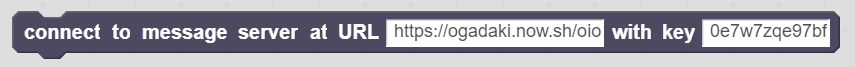
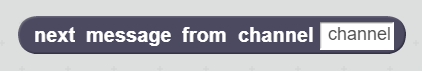

Messaging across projects
A ScratchX extension that connects to a messages relay server
This ScratchX extension provides some inter project messaging capabilities to your ScratchX projects. Somebody creates a project, somebody else creates another project on another computer, and with this extension the two projects can send messages to each other.
With this extension you can create chat apps or online games.
This extension is an advanced version of the extension for simple messaging. It adds some kind of "connection spaces" and channels, which allow better use separation and design of more complex communication scenario.
Basic chat app
This one is a chat app example: connect to a server, display messages from the server and let the user type some messages to send. With users that can choose nicknames.
Empty project
Here is a link to an empty ScratchX project with the extension loaded.
Blocks
Here are the blocks you can use with this extension.

Connect your project to an external message server. Typically you use this block only once at the start of the project. Even if there is no need for that, it is safe to call it several times. In that case it deconnects before reconnecting.
The default URL points to a running server that we host for you.
Choose a key to define a communication space specific for your project. The messages will be seen only by projects that use this key. Use a key for your chat app, another one for your online race game, an other one for your online tic tac toe, etc. You can use any character you want for the key.
Try to choose a key that is as unique as possible to avoid conflicting uses of key with projetcs from other people. Each time the extension is loaded a new random key is generated for you, like "d274w7jkh9b". You can keep it but you are welcome to change it. If you have to comunicate the key to other people in the room you might want something easier to tell. For example you can use three random words like "upstairs purple charts", it has a good chance to be unique and you can communicate it easily to others. You can also use the place your are and/or the time (for a workshop for example) as a way to make it a bit more unique, like "La Compagnie du Code 2017 oct, chat app".
Use this block to send a message to a channel. Anynone that is connected with the same key will receive this message (including you, of course). For this block to work, one must have called the "connect" block above before.

Reports the last message that was send to a channel. That message can come from the current project or from any other project that is connected to the server with the same key. For this block to work, one must have called the "connect" block above before.
More examples and description
This page is a work in progress. More info soon!
About
This extension was first demoed during the Scratch conference in Bordeaux in 2017 (Scratch2017bdx).
Build by @nnodot from La Compagnie du Code